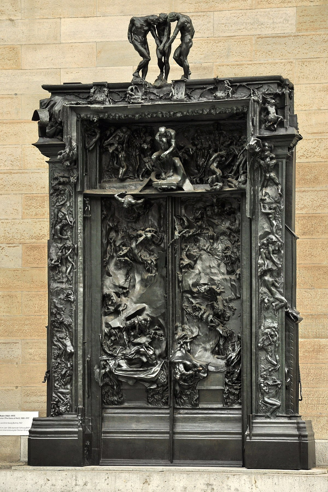
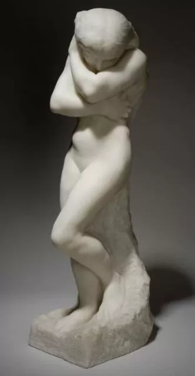
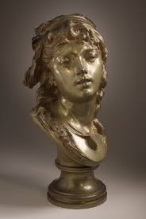
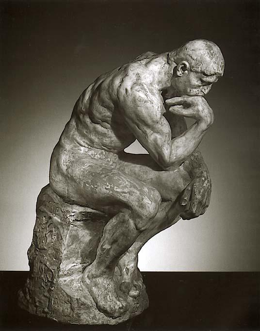

Sobre o Artista
Auguste Rodin nasceu em 12 de novembro de 1840, em Paris, França.
Filho de uma família modesta, Rodin cresceu em meio à pobreza e passou grande parte de sua infância trabalhando
em oficinas artesanais. Em 1854, ele começou a frequentar a Escola de Artes Decorativas de Paris, onde estudou
desenho e pintura.
No entanto, foi como escultor que Rodin realmente se destacou. Em 1864, ele ganhou
um prêmio para estudar na Academia Francesa em Roma, o que lhe permitiu aperfeiçoar sua técnica escultórica.
Lá, ele criou uma série de obras que chamaram a atenção dos críticos e colecionadores de arte. Ao voltar para
Paris, em 1877, Rodin já era um artista reconhecido, com uma reputação crescente como um dos mais talentosos
escultores da época. Ele trabalhou em uma série de projetos importantes, incluindo a porta do inferno e a
estátua do pensador.
Algumas Obras do Artista

Porta do inferno

Eve (After the Fall)

O beijo

Suzon

Estátua do pensador